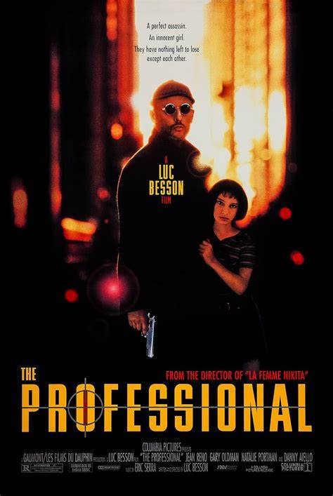

O PROFISSIONAL

Lançamento: 17 de fevereiro de 1995 No cinema
Duração: 1h 43min
Gênero: Ação, Policial, Drama, Suspense
Classificação: 14 anos
Direção e Roteiro: Luc Besson
País de Origem: Estados Unidos, França
Elenco: Jean Reno, Gary Oldman, Natalie Portman
Título original: Léon
Sinopse:
Em Nova York o assassino profissional Leon (Jean Reno) não vê sentido na vida.
Quando a família vizinha é morta por policiais envolvidos com drogas ele decide proteger Mathilda (Natalie Portman),
uma menina de 12 anos que é a única sobrevivente da família. Ela deseja se tornar uma assassina, para poder vingar a morte do seu irmão de 4 anos.
Enquanto ela cuida da casa e ensina o pistoleiro a ler e a escrever, ele lhe ensina o básico de como manejar uma arma.
Saiba Mais